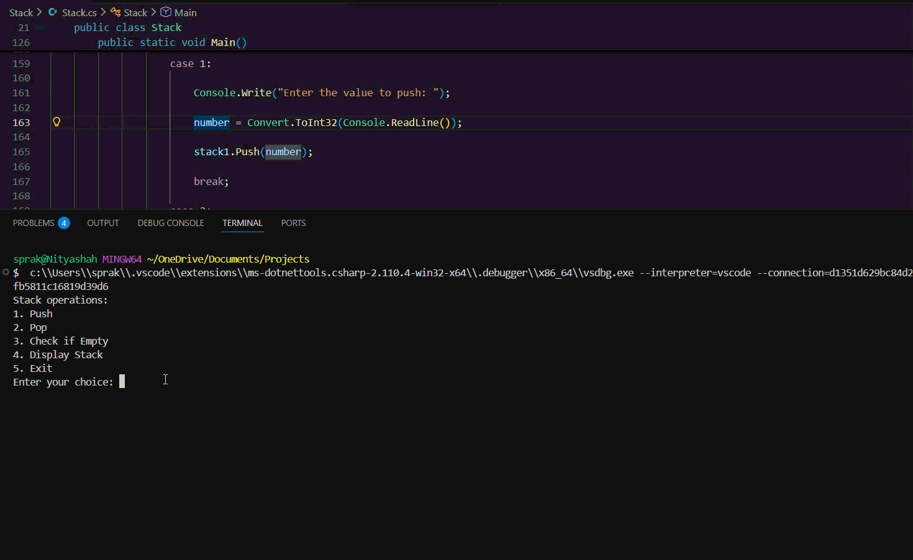
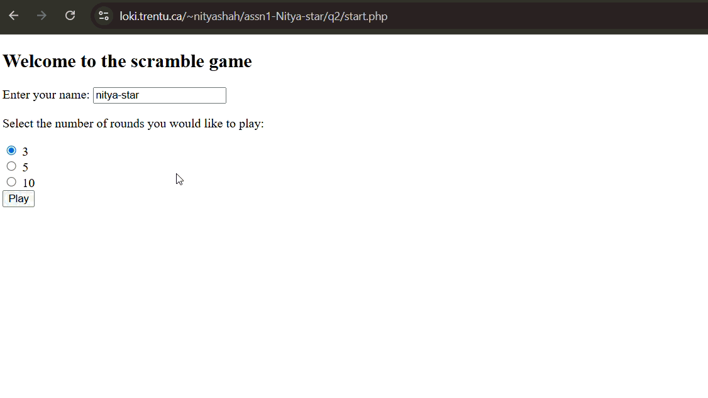
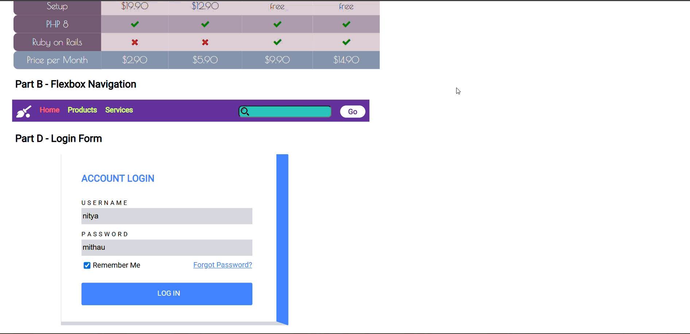

Some Academic Projects
Below are several academic projects that demonstrate my learning and problem-solving approach in Computer Science. Each project includes the course code and name, the term during which it was completed, a brief description, and a link to its GitHub repository.

Movie Streaming App
PHP | SQL | React | ThunderClient
- Engineered a relational database schema to handle 4000+ dynamic movie entries with full data integrity.
- Developed secure user authentication protocols and persistent watchlist states using PHP Session management.
- Developed a dynamic search and filtering system using SQL queries to sort movie data by genre and rating.
- Optimized SQL queries to ensure sub-second response times for complex list searches.

Stack Implementation
C# | .NET Core | Visual Studio Code
- Developed a custom Stack implementation using Linked List to manage dynamic memory allocation.
- Achieved O(1) time complexity for all core operations (Push, Pop, isEmpty) through optimized pointer logic.
- Completed as a closed-book technical assessment, implementing the entire structure and logic from memory with 100% syntax accuracy.
- Designed an interactive switch-case menu interface that handles real-time user input and validates the stack's state after every operation.

Word Scramble Game
PHP | Session State
- Architected server-side logic to maintain game state across multiple concurrent user sessions.
- Used a randomized shuffling function that ensures unique game patterns across a number of iterations.
- Implemented instant server-side validation to prevent client-side score manipulation.
- Designed a responsive UI that maintains 100% functionality across desktop and mobile browsers.

Accessible Web Components
HTML5 | CSS3 | JavaScript
- Achieved a 100/100 Lighthouse Accessibility score for the resume page by implementing high-contrast ratios.
- Designed user-centric navigation components following WCAG 2.1 AA standards for inclusive design.
- Maintained a clean and modular code structure by separating logical components, ensuring the project is easily readable and maintainable for future updates.
- Performed Cross-Browser Validation using Chrome DevTools to ensure consistent UI rendering and functional parity across multiple browser engines.

Graph Implementation
C# | .NET Core | Visual Studio Code
- Implemented Dijkstra's shortest path algorithm, choosing it for its O(n^2) efficiency compared to the slower O(n^3) performance of Bellman Ford.
- Structured the network using Adjacency List, which allowed for faster node lookups and more efficient memory usage than a standard 2D array.
- Developed a custom path-reconstruction logic that traces back through "previous" node dictionaries to output a clear, step-by-step route for the user.
- Designed the system to handle weighted edges (minutes), ensuring the algorithm calculates the true fastest time rather than just the shortest distance.